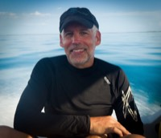

CNN
65 people whose festival biography mentions CNN. A mention can mean a job, a past job, a grant, a broadcast or an award: read the bio for which.
- Alex GibneyFilmmaker, panelist · 3 editions, 2015–2019

 Michael RezendesPanelist, moderator, workshop leader · 3 editions, 2015–2023
Michael RezendesPanelist, moderator, workshop leader · 3 editions, 2015–2023- Laura BlumenfeldModerator · 2 editions, 2018–2024
- Assia BoundaouiPanelist, filmmaker · 2 editions, 2017–2018


- Ivy MeeropolFilmmaker, panelist · 2 editions, 2019–2025
 Lynne AdrineModerator · 2024
Lynne AdrineModerator · 2024 Tetiana Anderson2021
Tetiana Anderson2021 Lawrence BartleyPanelist · 2021
Lawrence BartleyPanelist · 2021- Richard Ben-VenistePanelist, film subject · 2018
 Michael CaseyPanelist · 2021
Michael CaseyPanelist · 2021 Farai ChideyaPanelist · 2021
Farai ChideyaPanelist · 2021 Costas ChristPanelist, journalists behind the film · 2025
Costas ChristPanelist, journalists behind the film · 2025
- Traci A. CurryFilmmaker, panelist · 2021
- Kirby DickPanelist · 2015
- Andrew FeinsteinPanelist · 2015
 Darren FosterFilmmaker · 2022
Darren FosterFilmmaker · 2022 Marisa FoxPanelist, filmmaker · 2026
Marisa FoxPanelist, filmmaker · 2026
 Sabrina Schmidt GordonPanelist · 2021
Sabrina Schmidt GordonPanelist · 2021
David E. GuggenheimModerator · 2025- Sally HaydenPanelist · 2019
- Brent HuffmanFilmmaker · 2022
 Eugene JareckiPanelist, filmmaker · 2025
Eugene JareckiPanelist, filmmaker · 2025
 Conall JonesPanelist, filmmaker · 2025
Conall JonesPanelist, filmmaker · 2025- Suki KimPanelist · 2017
 Marc Levin2021
Marc Levin2021- Shola LynchWorkshop leader · 2018Schomburg Center for Research in Black Culture, The New York Public Library
- Robert MaguirePanelist · 2018

- Connie PendletonPanelist · 2018
 Sierra PettengillFilmmaker · 2021
Sierra PettengillFilmmaker · 2021- Johanna SchillerFestival team · 2019
 Charles M. SennottPanelist · 2021
Charles M. SennottPanelist · 2021 Sonam VashiPanelist · 2026
Sonam VashiPanelist · 2026

- Olivia YarvisPanelist · 2022
- Kyra ZemanickFestival team · 2018